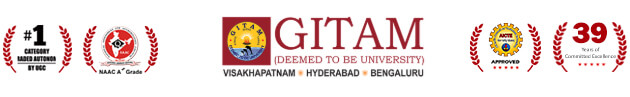

GITAM – Hyderabad campus established in 2009, is committed to enhance the potential of human resources and enrich academic performance and research innovation as well as expand the frontiers of knowledge through interactive and collaborative pedagogy. The stringent admission process has made it possible to absorb meritorious students from all over the country with immense potential and calibre. The Campus has six schools - School of Technology, Hyderabad Business School, School of Pharmacy, School of Architecture, School of Science and School of Humanities & Social Sciences. The graduate, postgraduate and research programs promote intellectual transformation of students into well-rounded individuals.
The major assets of the campus are well-qualified faculty members, motivated students and excellent infrastructural facilities. A majority of the faculty members represent GITAM as invited guests, key note speakers, reviewers, editorial board members, advisory and technical board members etc. Many faculty members have been bestowed with prestigious honours and awards in the education sector.
The students actively engage themselves in cooperative learning using technology enabled instruction. The emphasis is on the overall development of the students in terms of their aptitude and attitude. Skill development centers such as IBM, CICSO Networking Academy, Virtusa / Polaris, Hitachi Solutions, Innovation Centre, Computer Aided Engineering, Digital Manufacturing, Reverse Engineering provide open-minded learning atmosphere. The co-curricular and extra-curricular activities create a platform for various student bodies and chapters such as IEEE, CSI, SAE, Engineers without Borders (EWB) and NSS. The industry-academia interactions give a platform to grab job opportunities in different multinational companies. The alumni interactions strengthen the career options and the quest for higher order thinking.
We welcome you to our campus for a happy and truly enriching learning experience!